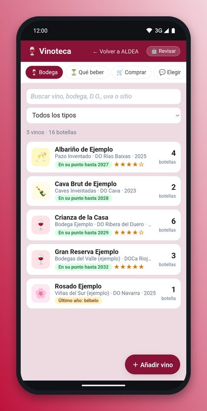
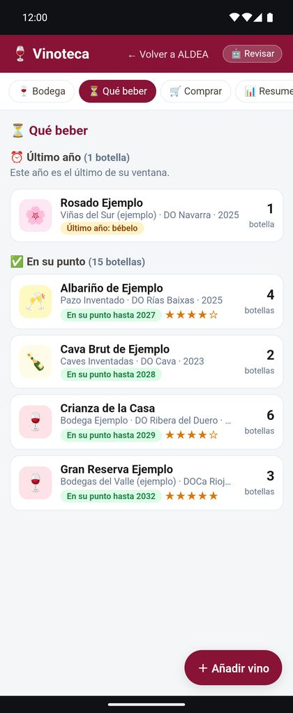
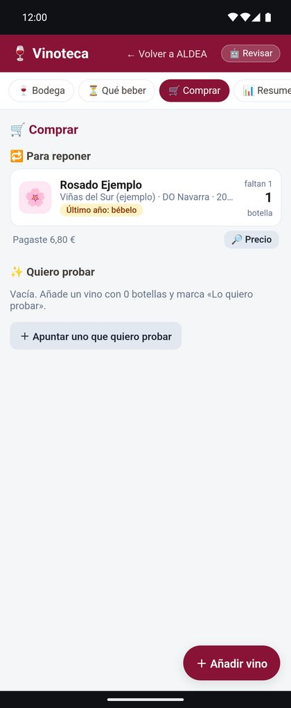
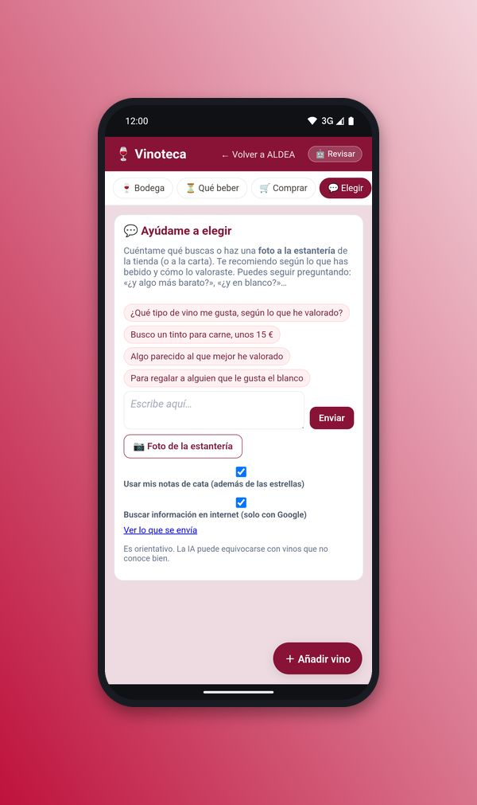
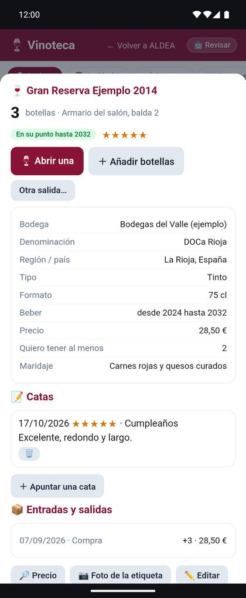

🎬 Míralo en vídeo
Menos de un minuto, con voz. Los datos que salen son de ejemplo.
📱 Así se ve





Capturas con datos de ejemplo. Toca una para verla en grande; pasan solas (se paran mientras la miras).
- ＋ Añadir vino: nombre, bodega, denominación de origen, tipo, crianza, añada, uvas, grado, botellas, precio, tienda y dónde está. Con la añada y la crianza, ALDEA te propone cuándo beberlo (orientativo); tú decides si lo usas.
- Para no escribir: 📷 Leer la etiqueta (haces una foto y la inteligencia artificial rellena la ficha con lo que se lee; la foto queda como foto del vino) o ▮▮ Código de barras (lo busca en Open Food Facts, una base de datos abierta; solo se envía el número). Si ya tienes ese vino, te lo dice para que añadas botellas. Revisa siempre los datos antes de guardar.
- En la ficha: 🍷 Abrir una (quita una botella y te deja valorarla con estrellas y una nota), ＋ Añadir botellas, las catas, las entradas y salidas, y una foto de la etiqueta.
- ⏳ Qué beber separa los vinos que ya se han pasado, los que están en su último año, en su punto, para guardar o sin fecha.
- 🛒 Comprar: los que bajan del mínimo que quieres tener (Quiero tener al menos…) y los que quieres probar. 📊 Resumen: botellas, valor, botellas abiertas y gasto del año, por tipo y por denominación.
- 💬 Elegir: cuéntale qué buscas o haz fotos a la estantería de la tienda (o a la carta) y te recomienda según lo que has bebido y cómo lo valoraste. Puedes hacer varias fotos (📷 Otra foto, o elegirlas juntas en 🖼️ De la galería): estanterías distintas o de más cerca para que se lean las etiquetas. Se juntan abajo y, con 🔎 Estudiar, la IA las lee todas a la vez y apunta cada vino una sola vez, con el precio del cartel si se ve. Si luego mandas más, se suman. Es orientativo.
- 🔎 Precio (en la ficha y en Comprar), para ayudarte a comprar: abre Vivino, Wine-Searcher o Google Shopping con el vino ya escrito, o deja que la IA lo busque en internet (solo con Google Gemini): precio habitual, puntuaciones, gama y estilo, con enlaces a las fuentes, y si lo que pagaste está en lo habitual. Compruébalo en las fuentes: los precios cambian.